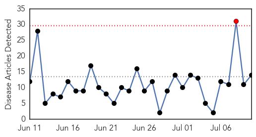
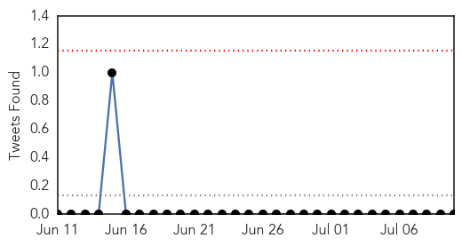
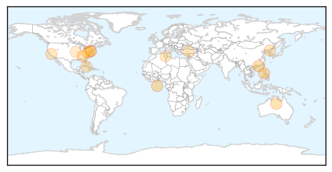
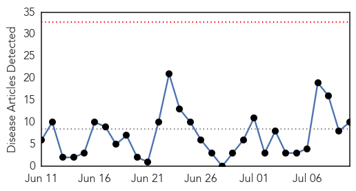
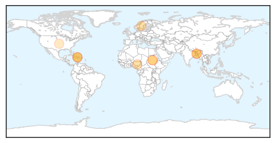
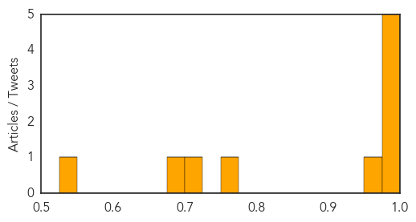

Influenza
30-Day Web Trend
1 alerts, 0 warnings

30-Day Twitter Trend
0 alerts, 0 warnings

Article Locations
Article Confidences

Top Articles:
- 0.976
- Canine flu confirmed in Gwinnett
- 0.975
- Hong Kong’s health authorities play down South Korean alert over rising flu toll
- 0.969
- 6 things to know
- 0.961
- DOH warns against water-borne diseases
- 0.898
- Pharmacists push for change to Poisons Act so they can give flu jabs
- 0.896
- Georgia SPCA officials cancel vaccination clinic after canine flu outbreak
- 0.891
- The Northern Virginia Daily: News and Sports coverage in Winchester and Shenandoah, Frederick, Warren and Clarke counties
- 0.758
- Human Food Safety Not Likely Threatened By Costly Avian Flu
- 0.751
- July 10, 2015 Archives
- 0.751
- July 10, 2015 Archives
- 0.751
- July 9, 2015 Archives
- 0.751
- July 9, 2015 Archives
- 0.635
- Dog Flu Spreads Through U.S. - Story
- 0.578
- Avian flu threat has not disappeared
Top Tweets:
-
No tweets found for Jul 10, 2015
Cholera
30-Day Web Trend
0 alerts, 0 warnings

30-Day Twitter Trend
0 alerts, 0 warnings

Article Locations
Article Confidences
Top Articles:
- 0.997
- Oral Cholera Vaccine Shows Promise, Reduces Cases by Almost 40%, study
- 0.994
- New cholera vaccine trialed in Bangladesh slum cut cases by nearly 40 per cent
- 0.992
- The most from the coast
- 0.990
- South Sudan Red Cross mobilizes volunteers to combat cholera in Juba
- 0.983
- Inexpensive drug may end cholera epidemics
- 0.973
- We now have a cheap and effective cholera vaccine
- 0.754
- Patients die as S.Sudan fighting forces medics to flee: Red Cross
- 0.703
- Attention People Who Eat Dog Meat! Here are 3 Major Health Concerns You Should Know About
- 0.696
- Why can’t we stop cholera in Haiti?
- 0.536
- UN has promises to keep in Haiti
Top Tweets:
-
No tweets found for Jul 10, 2015